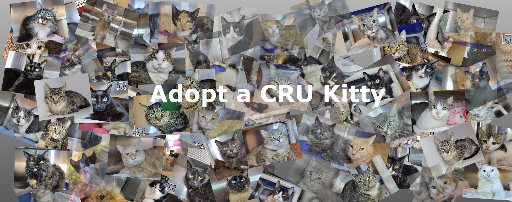

Please check our Facebook page for upcoming adoption events and to see some of the cats and kittens we have for have for adoption. We also list our cats and kittens available for adoption on Petfinder.com. If you don’t see a cat or kitten on either of these websites that matches what you are looking for, please email Cats-R-Us to see if we have any new rescues or underage kittens not posted but will be available for adoption in the near future.
Potential adopters are asked to complete an adoption application. Once the application is received, a Cats R Us representative will forward it to the cat or kittens foster parent or shelter manager. If the cat or kitten is deemed a match for the adoptive home, a time is set for the potential adopters to meet them. If there are already other animals in the adopter’s home, we contact the adopters veterinarian for a reference. This process is simply to protect the health of the potential adoptee and the companion animals already owned. Providing all goes well, an appointment for a home visit (virtual home check also available) will be arranged and the adoption will take place at this time.
All of our rescues, adults and kittens, are spayed or neutered BEFORE placement in a permanent home. Our cats and kittens have been evaluated by a veterinarian and given the proper tests (FeLV/FIV) and vaccines, de-wormed and treated for fleas. Our adoption fee for cats less than one year old is $120 for one, $200 for two. Cats older than one year old are $100 for a single cat and $180 for two cats. As a non-profit 501(c)(3) rescue, we don’t have a staff veterinarian so the adoption fees we charge help offset the costs we pay at veterinary clinics to get our cats and kittens ready for adoption.If you are gone from home for an extended period during the day, and desire to adopt a kitten, please consider adopting two and share in the wonderful enjoyment two kitties bring to your life. You will be delighted (and comforted) in knowing that they have each other while you are away!